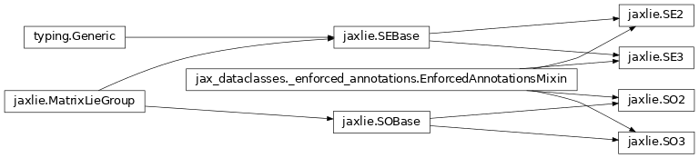

jaxlie documentation


jaxlie is a Lie theory library for rigid body transformations and
optimization in JAX.

Current functionality:
SO(2), SE(2), SO(3), and SE(3) Lie groups implemented as high-level dataclasses.
exp(),log(),adjoint(),multiply(),inverse(), andidentity()implementations for each Lie group.Pytree registration for all dataclasses.
Helpers + analytical Jacobians for tangent-space optimization (
jaxlie.manifold).
Source code on Github.
API Reference
Example usage